Build Process
Build Agent
Infrastructure
- Server
-
- VSTS manages build definitions and queue
- Runs in Microsoft's datacenter
- Agent (recently renamed to Pipeline)
-
- Does the work in the queue. Transforms source into final product.
- Currently only one, but multiple can exist
- Runs on Hyper-V VM named R2D2
Setup
- Applications
- Visual Studio
- WiX
- Code signing certificate available to user account of build service
- Agent installer
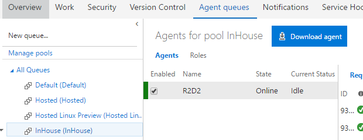
Maintenance
There's not a lot to do
- Windows and application updates
- Replace code signing cert when expired
General procedure
- Disable agent on VSTS agent queue settings
- If something is building, wait for that to finish
- RDP to agent for maintenance
- When agent is ready again, re-enable agent from VSTS
Build Definition
A build definition contains all the configuration information to automate our build process. Changes are tracked in some behind-the-scenes repository for future reference.
- Build
- Discrete predefined actions for the build agent to execute
- Options
- Some basic options for build configuration.
- Repository
- Locations in source control restored to the build agent. These files end up in a known "Build Sources" directory
- Variables
- Custom key-value pairs for the build definition and environment variables of the build in execution
- Triggers
- Events to automatically start a build
- General
- Metadata and requirements for the build
- Retention
- How long should the build and results stay in the system
- History
- View changes over time to the build definition in JSON format
NCS Conventions
Build Steps
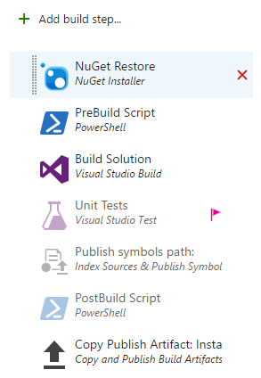Generic options on all build steps:
- Enabled
- Should this step run
- Continue on error
- Continue running subsequent steps if this one fails
- Always Run
- If a previous step failed, run this on anyway
NuGet Restore
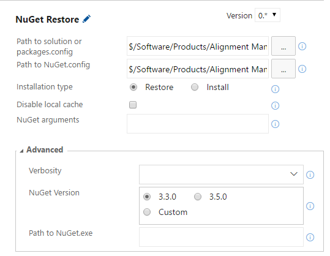Restores NuGet packages according to the nuget.config and sln files in the build sources dir.
- Path to sln or packages.config
- Source dir has folder named ".nuget" with nuget.config inside.
- Path to NuGet.config
- Ensure this path has the correct branch.
Prebuild Script
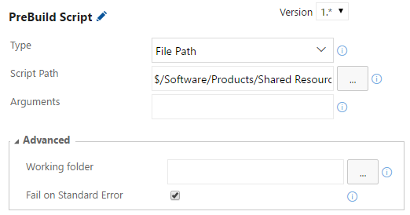Execute PowerShell standard action
Modifies files before building, like a developer would
- Type
- "file path"
- Script Path
- Script located in Shared Resources. Two scripts exist:
- Full script to modify installer source and download latest good Core build.
- Reduced script to build NCS.Core
Build Application
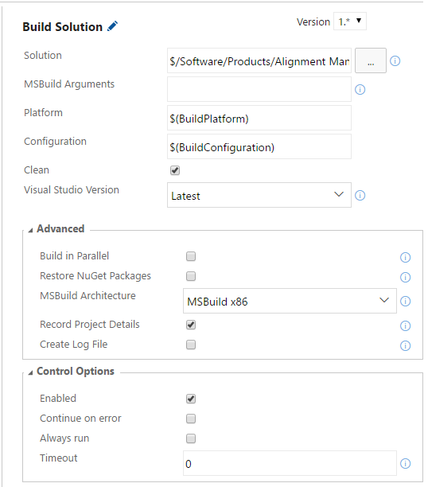VSBuild standard action
Use Visual Studio to build the specified sln file. Platform and Configuration use variables because Multi-Configuration selects those values over multiple builds.
- Clean
- Removes changes from previous build, if any
Unit Tests
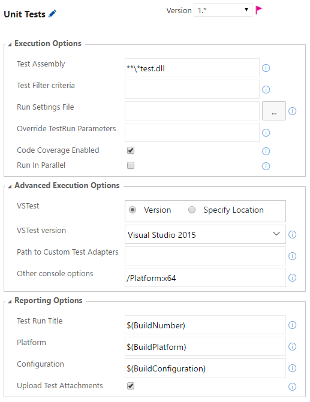Unit test standard action. Not all build definitions have unit tests enabled because some solutions don't have unit tests separate from integration tests.
- Test Assembly
- Pattern to match the test assemblies
- Test Run Title
- Should be the build number variable
- Platform and Configuration
- Set to platform and configuration variables
Copy Publish Artifacts
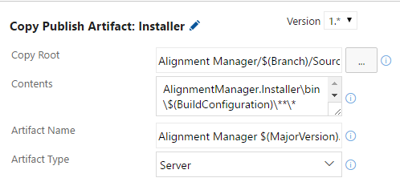Copy Publish Artifacts standard action
- Copy Root
- Root to search for artifacts. Must be relative to build sources directory
- Contents
- Pattern to find artifacts
- Artifact Name
- Assign a name the coresponds to the configuration (and platform) using variables
Options
Multi-Configuration
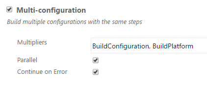 Build multiple configurations on one trigger- Multipliers
- Comma delimited list of variable names to multiply a build by. Configuration and Platform usually appear here.
- Parallel
- Build different instances of the multipliers across multiple build agents. Checked by default in case we get more build agents.
Script Token
Allow Scripts to Sccess OAuth TokenPowerShell scripts need this to make REST API calls to VSTS
Repository
Setup
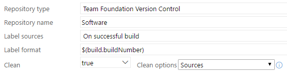The configurations above is default and uniform across our build definitions.
- Clean
- When "true" the build will begin by deleting changes and downloading anything not present on the build agent.
Mappings
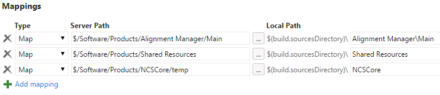- Type
- Map will download. Mask will prevent download if some ancestor directory is mapped.
- Server Path
- Path in source control
- Local Path
- Path in the build sources directory on the build agent. Make this directory structure match source control! Build configurations rely on relative paths.
NCS.Core Mapping Caveat
NCS.Core is mapped differently. Core binaries are downloaded as artifacts from previous good build. Mapping to empty "temp" folder ensures clean on each application build.
Variables
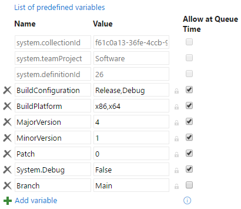- BuildConfigurtation, BuildPlatform
- Single string, or comma deilimited list if these variable names appear in Multi-Configuration
- MajorVersion, MinorVersion, Patch
- The version number used in assemblies and installers
- System.Debub
- Increase logging
- Branch
- Variable for quicker cloning
Triggers
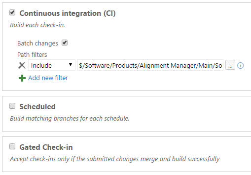Continuous integration builds occur when relevant source is checked in
General
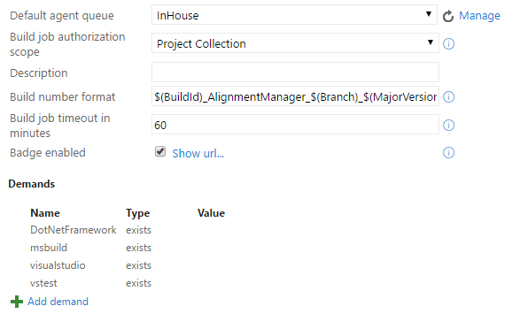- Agent queue
- The InHouse queue has our build agent.
- Build number format
$(BuildId)_AlignmentManager_$(Branch)_
$(MajorVersion).$(MinorVersion).$(Patch)-$(SourceVersion)
- Unique ID of build
- App name
- Branch
- Version number
Cloning a Build Definition
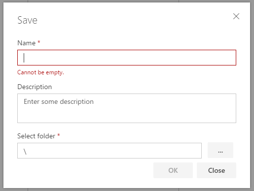 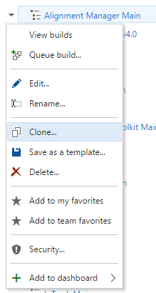Prebuild Script
Module
Script
- Modular
- Low sugar
$array | % { write-host $_.property }foreach($item in $array){ write-host $item.property }
- Clean(ish) code
- Documented in PowerShell format
Common
- Loads XML document to object
- Constructs version number from environment variables
Setup
Common tasks to setup a build.
- Downloads NCS.Core
- Locates targets file according to the sln name
- Parses that file to retreive NCS.Core branch
- Calls API functions to download correct branch
- Empties Infragistics license files
API
Potentially reusable functions for the VSTS API They're mostly used to get the lastest good Core.
- Query for build definitions of a certain name
- Locate latest good build of a specific definition
- Get artifact info for single build
- Download a single artifact
Logging
Simple Title blocks for logging functions. Used for major segments of the script.
Installer
- Add code signing
- Suppresses installer validation
- Set output file name
- Set version number
Assebly Info
Modifies text of AssemblyInfo.cs files in the product's source dir.
- Updates assembly and file version number
- Updates copyright year
- Sets company name for uniformity
Project
Update csproj files to prevent common errors while building
- Removes register for COM interop flag
- Removes EsriRegAsm from post build event
- Adds code signature
- Removes DEBUG constant
Header
Each script has the same things to start
- Set verbose logging if debug
- If testing, use dev branch of module
NCS.Core Build
- Updates assembly info
- Empty Infragistics licenses
- Update project files
Applications
- Same as Core script, plus:
- Updates installer
- Downloads latest good Core artifacts
Branches of the script
$/Software/Products/Shared Resources/Build Resources/
- Scripts : Used for production
- Scripts-dev : Test changes here
Test it first
- Build definition named Build Script Test
- CI triggered by any check in to the dev branch
- Builds InTrack Main as a test for current code
- Artifacts are files altered by script, not finished InTrack
Build Summary
Start Here! This summary will narrow it down.
- Left column
- Shows each multiplied configuration
- Issues list
- Summarized list of build errors and warnings, like Visual Studio
Script Log
If the build failed on a "PreBuild Script", click that step to see the log.